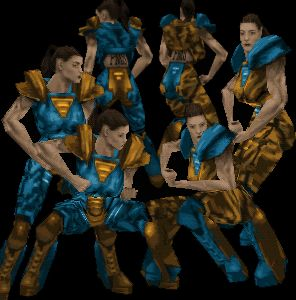

PATCHES
+-+-+-+-+-+-+-+-+-+-+-+-+-+-+-+-+-+-+-+-+-+-+-+-+-+-+-+-+-+-+-+-+-+-+-+-+-+-+-+-+-+-+-+-+-+-+-+-+-+-+
Female Cyborg Patch for Marathon Infinity
by Ken Hodgman (khodgman@cybergate.net )
Platform: MAC
Download: http://archives.bungie.org/inf.shapes/mi.cyborg.patch.hqx
Ken Hodgman's Female Cyborg Patch replaces the male cyborg monster in Marathon with a lethal female automaton, erasing phallic tubing, smoothing the original cyborg's masculine musculature, and adding breasts. This menacing robot bride seems to have stepped (or "rolled") off the screen of early twentieth century science fiction films like Fritz Lang's "Metropolis." The female cyborg, next of kin to the female Frankenstein, is a treacherous fantasy figure often on the verge of going haywire and turning against her creator.
+-+-+-+-+-+-+-+-+-+-+-+-+-+-+-+-+-+-+-+-+-+-+-+-+-+-+-+-+-+-+-+-+-+-+-+-+-+-+-+-+-+-+-+-+-+-+-+-+-+-+
FemDOOM
by Lynn Forest(teejay@ccwf.cc.utexas.edu )
http://www.filelibrary.com/Contents/DOS/104/35.html
Lynn Forest's FemDOOM wad is an unusually early feminist shooter hack by a woman of the Doom engine. In the read-me file for her wad, she is quite clearly describes the purpose of her wad: "FemDOOM is for all those frustrated women who have had to play with a male face in the status window (including myself) It replaces the standard BJ Blaskowicz mug with a female character drawn in much the same style as the original ID artwork."
+-+-+-+-+-+-+-+-+-+-+-+-+-+-+-+-+-+-+-+-+-+-+-+-+-+-+-+-+-+-+-+-+-+-+-+-+-+-+-+-+-+-+-+-+-+-+-+-+-+-+
Amazon Fighters vs. Pistol-Packin' Robertas patch
and Amazon Fighters vs. Pistol-Packin' Robertas sound patch for Marathon Infinity
by J. Coffey (jcoffeycup@earthlink.net)
Platform: MAC
Download: http://archives.bungie.org/inf.shapes/mi.roberta.amaz.hqx
This patch not only replaces the protagonist, male soldier "Bob", in Marathon Infinity with a "Female Roberta", but also substitutes the male alien attackers for female Amazons. These busty, bare-breasted Amazons with sturdy quadriceps represent a configuration of the female game character that borders on the pornographic with such hyperbole as to almost cross into parody, (but then again, parody and excess are not alien to pornography). Like the "Nude Raider patch" for Tomb Raider's Lara Croft, there is a smooth silicon hardness to the surface of the Amazons' nude polygons that recalls the synthetic, fetish appeal of plastic blow-up dolls and mannequins. (This smooth shiny surface aesthetic elicits appreciation of fully clothed 3-d avatars as well or even of inanimate 3-D objects, and is somehow tied in with our culture's current fetish love of 3-D aesthetics in general.)
+-+-+-+-+-+-+-+-+-+-+-+-+-+-+-+-+-+-+-+-+-+-+-+-+-+-+-+-+-+-+-+-+-+-+-+-+-+-+-+-+-+-+-+-+-+-+-+-+-+-+
Female Bobs Patch for Marathon Infinity
by Loren Petrich (petrich@netcom.com)
Platform: MAC
Download: http://archives.bungie.org/inf.shapes/tina.shapes.hqx
As Loren Petrich states in his Read-me file, his Female Bob patch is a deliberate attempt to offer a female heroine alternative to "bimboish" patches like Amazons and Pistol Packin Robertas. "Tina-bob" is fully clothed and her figure does not approach the cartoon-like excess of most female game heroines. The androgynous, asexual Tina offers players the opportunity to play the game as a woman who relies on her intellectual and combat skills rather than her physical powress as seductress. Although androgyny and chaste clothing are not very fashionable among computer game characters, neither male nor female, perhaps the "Tina-bob" character is analogous to the more androgynous, nerdy, male protagonist of more recent first person shooter Half-life.
+-+-+-+-+-+-+-+-+-+-+-+-+-+-+-+-+-+-+-+-+-+-+-+-+-+-+-+-+-+-+-+-+-+-+-+-+-+-+-+-+-+-+-+-+-+-+-+-+-+-+
The Female Skin Pac for Quake
by Multiple Authors
Platform: PC
Download: http://www.planetquake.com/QWF/skinpac.html
In the first release of network shooter Quake, developer Id software was prepared for game fans to design their own custom "skins" or 2-D graphics to wrap around the 3-D modeled character provided in the game. But Id software did not anticipate players wanting to play a female character and included only one 3d-Modeled figure in the game, a muscular male. Thus was spawned a legion of brawny "frag queens", women whose skin-tight apparel reveals bulging muscles with no hint of an hour glass figure. Responding to the strong desire for female avatars expressed by both male and female Quake players, subsequent versions of Quake included a female 3-D model. These early frag queens point towards the deviant gender configurations that can emerge when gender construction is opened up to online game hacker communities.
+-+-+-+-+-+-+-+-+-+-+-+-+-+-+-+-+-+-+-+-+-+-+-+-+-+-+-+-+-+-+-+-+-+-+-+-+-+-+-+-+-+-+-+-+-+-+-+-+-+-+
"Tomb Raider I and II Patches"
by Robert Nideffer (nideffer@proxy.arts.uci.edu)
Platform: PC
Download: http://proxy.arts.uci.edu/~nideffer/crack/
These are patched patches, hacks of the original Nude Raider Patches for Tomb Raider that offer alluring variations on Lara; transsexual Lara, butch Lara, Lara in drag. The train of gender signifiers arrive at no ultimate conclusion; Lara's true identity, whether it be man, woman, dyke or queen, is in a constant state of slippage. Robert Nideffer describes his Tomb Raider hacking as "a Duchampian reference to the reappropriative Mona Lisa 'hack'", linking game hacking to art historic strategies of gender play and subversion.
+-+-+-+-+-+-+-+-+-+-+-+-+-+-+-+-+-+-+-+-+-+-+-+-+-+-+-+-+-+-+-+-+-+-+-+-+-+-+-+-+-+-+-+-+-+-+-+-+-+-+

PMS Skins for Quake2
by Georgina (georgiana@planetquake.com)
Platform: PC
Download: http://www.planetquake.com/QWF/q2skins/pms.html
Often network game clans create their own trademark "skins", custom 2-D character graphics that wrap around 3-D character models provided by the game developer. These skins were created for the Psycho Men Slayers Quake clan. PMS is a predominantly female clan that also allows male members to join, but only as "towel boys" who wear nothing but little towels and combat boots. The PMS skins display the PMS tattoo in the small of the character's back. Here is a new variant of the female monster, both macho and feminine, sexy, pumped and slightly older, referencing the type of heroine common to films like Terminator 2 and Aliens, and the body architecture that multitudes of women in weight training and kick boxing classes aspire towards. Quake players and fans log onto numerous servers hosting Quake death matches, testing their reflexes and skills against one another. That many of the female avatars are controlled by actual female players is an important shift in the gender terrain of the shooter.
+-+-+-+-+-+-+-+-+-+-+-+-+-+-+-+-+-+-+-+-+-+-+-+-+-+-+-+-+-+-+-+-+-+-+-+-+-+-+-+-+-+-+-+-+-+-+-+-+-+-+
Otakon Doom
by Mark Sachs(sleet@netaxs.com )
Platform: PC
Download: http://www.netaxs.com/~sleet/otakon/doom.html
This Doom Wad was created specifically for a Japanese anime convention in Baltimore, U.S.A in July of 1996. A gate to hell opens underneath the convention hotel and demons attack. Mark Sachs' read-me file states "Clearly this is a job for a space marine with guts, courage, an armory full of vaguely phallic weaponry, and a brain the size of a walnut..." Unfortunately, according to the game wad narrative, this typical first person shooter soldier has the day off, and it is up to "Knight Saber Priss", a girl fighter styled on Japanese anime, to save the day.
+-+-+-+-+-+-+-+-+-+-+-+-+-+-+-+-+-+-+-+-+-+-+-+-+-+-+-+-+-+-+-+-+-+-+-+-+-+-+-+-+-+-+-+-+-+-+-+-+-+-+
Betty Bobs Patch for Marathon
Platform: MAC
Download: http://www.marathon.org/hyperarchive/Files/shapes/betty-bobs-11.hqx
Betty Bob is one of the first female patches for Marathon, a Mac 1st person shooter released in 1994. Bikini-clad Betty Bob has arrived from a different planet than the rest of the zippered up space age Marathon cast who inhabit Marathon's space ship port setting. Unlike another derivative of the standard Marathon "bob" character, "Tina Bob", Betty-Bob's "look" seems styled after the genre of soft porn Doom wads which decorate their walls with bikini and lingerie clad pin-up girls.
+-+-+-+-+-+-+-+-+-+-+-+-+-+-+-+-+-+-+-+-+-+-+-+-+-+-+-+-+-+-+-+-+-+-+-+-+-+-+-+-+-+-+-+-+-+-+-+-+-+-+
Bio-Tek Kitchen Patch
by Josephine Starrs and Leon Cmielowski
(starrs@sysx.apana.org.au, leon@autonomous.org)
Platform: MAC
Download: http://sysx.org/leon/mirror/biotek/
The artists' official game description reads "Players clean up the filthy kitchen laboratory of a home biotech enthusiast using weapons such as dish cloths and egg flippers. The player is attacked by nasty mutant vegetables which are the product of genetic nouvelle cuisine, and learns throughout the game of a world wide corporate conspiracy to take over the entire food chain." Although the gender of the protagonist in this patch may not be exactly female, the artillery of egg flippers, dish towels and other kitchen implements, point towards a particularly feminine rage. The player embarks on a violent rampage through a strikingly domestic kitchen maze setting. In Bio-Tek Kitchen the convulusion of male and female signifiers is unsettling and disturbingly funny.
+-+-+-+-+-+-+-+-+-+-+-+-+-+-+-+-+-+-+-+-+-+-+-+-+-+-+-+-+-+-+-+-+-+-+-+-+-+-+-+-+-+-+-+-+-+-+-+-+-+-+
Sailor Moon Doom Wad
by the SOS Doom Team (sos@dau.physics.sunysb.edu)
Platform: PC
Download: http://dau.physics.sunysb.edu/~ming/sos/sosdoom.html
Like the Otakon Doom Wad, the Sailor Moon Doom Wad draws directly on the lexicon of Japanese anime in the construction of its heroine. According to the SOS web site, the three releases of SOS DOOM with levels including Sailor Moon's house and the "Temple of the Moon", were developed by the SOS DOOM Team to support the efforts of the Save Our Sailors (SOS) campaign, "which aims at keeping Sailor Moon on the air in North America." Trails of cupcakes, slices of chocolate cake, hearts, roses, bunny suitcases, and messenger bees are scattered throughout the game architecture, a refreshing contrast to the barren, gothic, interior design common among most Doom wads.
+-+-+-+-+-+-+-+-+-+-+-+-+-+-+-+-+-+-+-+-+-+-+-+-+-+-+-+-+-+-+-+-+-+-+-+-+-+-+-+-+-+-+-+-+-+-+-+-+-+-+
The Quake Women's Forum
Platform: PC /MAC
http://www.planetquake.com/QWF/
The "Quake Women's Forum" is an excellent source of "female skin pacs" for all three versions of Quake, displaying images, credits and skins for download. The "Quake Women's Forum" is also a beneficial resource for female players, providing links to female clans like BWA, (Babes with an Attitude) and VV, (Viscous Vixens), female frag fests, Quake news, and profiles of female Quake players. The QWF provides a point of convergence for the growth of female shooter culture, a robust female discourse node in the predominately male discourse domain of computer gaming.
+-+-+-+-+-+-+-+-+-+-+-+-+-+-+-+-+-+-+-+-+-+-+-+-+-+-+-+-+-+-+-+-+-+-+-+-+-+-+-+-+-+-+-+-+-+-+-+-+-+-+